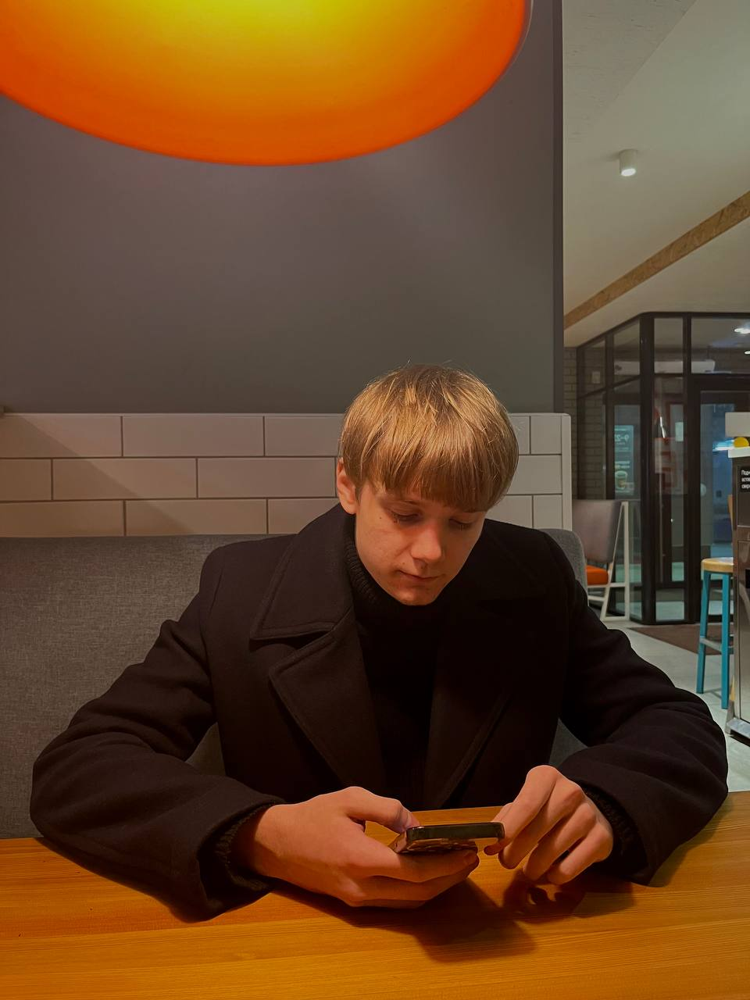

Коротко о моей жини и увлечениях
Город
Я родился и вырос в городе Белгород. Он расположен на востоке России, близ границы С Украиной. Город известен своей историческрй архитекттурой, включая кремлб и православные церкви. Город так же богат природными ресурсами, окруженными живописными ландшафтами и парками.
Школа
Я учился в Лицее №32. Наша школа славиться своими выпускниками и учениками. Дети из школ побеждают на всероссийских олипиадах и конкурсах.
Спорт
В моей жизни спорт занимает важное место, и две его сферы – спортивный туризм и легкая атлетика – стали неотъемлемой частью моего повседневного быта. В спортивном туризме я наслаждаюсь объединением физической активности с природой, и каждое новое приключение становится увлекательным вызовом. С другой стороны, легкая атлетика развивает мою выносливость и силу, позволяя постоянно преодолевать себя. Для меня спорт – это не только тренировки, но и источник вдохновения и самосовершенствования.
Навыки
Обладая разносторонними навыками, я способен успешно решать разнообразные задачи. В моем арсенале присутствуют технические навыки, в том числе в области программирования и IT, а также креативные способности, поддерживаемые опытом в дизайне. Моя способность эффективно коммуницировать и работать в коллективе делает меня адаптивным и результативным профессионалом. Я стремлюсь к постоянному обучению, чтобы оставаться в курсе последних тенденций и подходов в своей области.
ЕГЭ
Достижения в ЕГЭ подчеркивают мою глубокую преданность образованию и профессиональному росту. Результаты, такие как 90 в информатике, 76 в математике и 89 в русском языке, отражают не только тщательную подготовку, но и способность к сбалансированному развитию в различных областях. Мои знания в информатике, математике и языке обеспечивают прочную основу для успешного продвижения в образовательной и профессиональной сферах.
Тут я расскажу о своих дисциплинах в вузе...
Структуры данных
Мои навыки в области программирования включают умение эффективно использовать структуры данных. Я профессионально оперирую такими конструкциями, как массивы, списки, стеки и очереди, чтобы оптимизировать процессы обработки данных. Моя способность выбирать подходящую структуру данных для конкретной задачи обеспечивает эффективное выполнение программ и оптимизацию использования ресурсов.
С++
Владею навыками использования структур данных в языке программирования C++. Мои знания включают работу с массивами, связными списками, стеками и очередями, а также более сложными структурами, такими как деревья и хэш-таблицы. Могу эффективно применять указатели, классы и шаблоны для создания и манипулирования данными в памяти. В результате обладаю способностью оптимизировать код, учитывая особенности работы с памятью и требованиями конкретной задачи.
C#
В области программирования на C# мной успешно применяются структуры данных для эффективной обработки информации. Мои навыки охватывают использование массивов, списков, стеков, очередей, а также коллекций .NET Framework. Я уверенно работаю с различными типами данных, применяя их в контексте объектно-ориентированного программирования. Моя экспертиза в C# позволяет создавать оптимизированный и легко поддерживаемый код при обработке данных в различных сценариях.
Интернет технологии
В области интернет-технологий я обладаю широким спектром навыков. Моя экспертиза охватывает создание и разработку веб-приложений, использование языков программирования, таких как HTML, CSS, JavaScript. Кроме того, мой опыт включает работу с базами данных, веб-серверами и облачными технологиями, что обеспечивает комплексный подход к созданию современных веб-приложений.
Доп.образование
Вуз, в котором я учусь, поддерживает молодых разработчиков. Мне была представлена возможность проявить себя на конкурсе "Акселератор", где мы с командой разработали сайт и мобильное приложение. Так же мне была предоставлена возможно получить доп.образование по языку программирования "Python" на базе СПБПУ, гдея показываю достойные результаты.